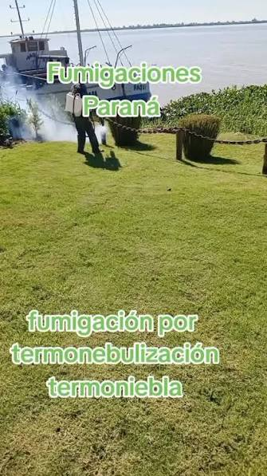
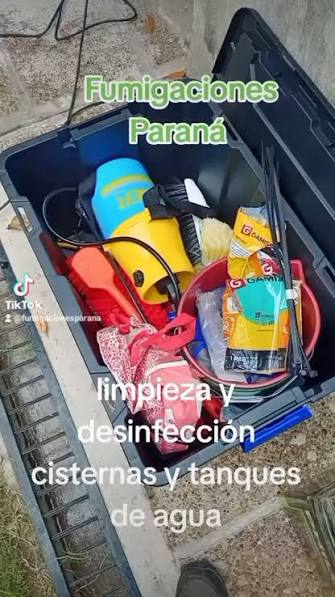
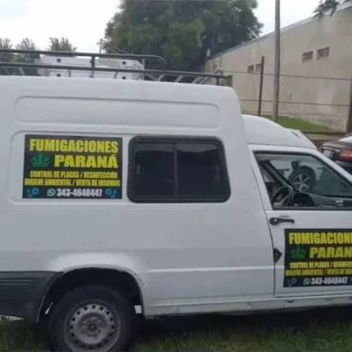
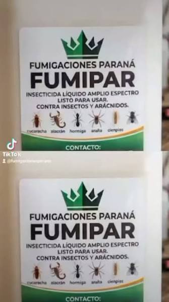

Desinsectación
Control de cucarachas, alacranes, arañas, hormigas, pulgas, garrapatas y otros insectos. Tratamiento en un turno y con una sola aplicación, según el tipo de plaga.
Empresa de control de plagas en Paraná. Servicios de fumigación para hogares, comercios e industrias, con atención en Paraná y zonas cercanas.
Trabajamos en el control de plagas y la higiene ambiental. Consultanos para encontrar la alternativa adecuada para tu caso.
Control de cucarachas, alacranes, arañas, hormigas, pulgas, garrapatas y otros insectos. Tratamiento en un turno y con una sola aplicación, según el tipo de plaga.
Termonebulización en grandes superficies para el control de vectores y la prevención del dengue.
Control de ratas, lauchas, ratones y animales salvajes.
Control mediante medidas de exclusión para evitar que ingresen o permanezcan en los espacios.
Desinfección contra virus, bacterias y hongos, con tratamientos de acción virucida y bactericida.
Limpieza de tanques de agua y cisternas, incluso en altura y espacios confinados.
Insecticidas, raticidas y desinfectantes. Consultanos por disponibilidad.
Servicio de desagote y limpieza de piscinas.
Algunos de los trabajos que realizamos en Paraná y zonas aledañas.
Tratamiento para cucarachas en cocinas y otros ambientes interiores.
Limpieza y desinfección de tanques de agua y cisternas. También trabajos en altura y espacios confinados.
Aplicación para moscas, mosquitos y jejenes; control de vectores y prevención del dengue.
Fumigación y retiro seguro de panales y enjambres de abejas y avispas.




Atendemos en Paraná y zonas aledañas. Escribinos por WhatsApp para consultar por nuestros servicios.